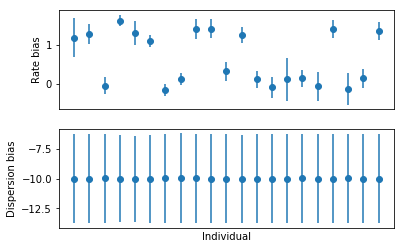

Hurdle model estimation
Table of Contents
Model specification and inference
We specify the model in Edward. We assume a fully factored variational approximation \(q(\beta_\lambda)q(\beta_\phi)q(u^\lambda)q(u^\phi)\).
nonzero_cpm = data['log_cpm'].ravel() > 0 q = nonzero_cpm.sum() m, n = data['onehot'].shape _, p = data['genotypes'].shape onehot = tf.placeholder(tf.float32, [q, n]) genotypes = tf.placeholder(tf.float32, [n, p]) cell_bias = tf.placeholder(tf.float32, [q, 1]) rate_bias_scale = tf.exp(tf.Variable(tf.ones([1]))) rate_bias = ed.models.Normal(loc=tf.zeros([n, 1]), scale=rate_bias_scale) rate_effect_scale = tf.exp(tf.Variable(tf.ones([1]))) rate_effect = ed.models.Normal(loc=tf.zeros([p, 1]), scale=rate_effect_scale) log_rate = tf.matmul(onehot, tf.matmul(genotypes, rate_effect) + rate_bias) mean = log_rate + cell_bias disp_bias_scale = tf.exp(tf.Variable(tf.ones([1]))) disp_bias = ed.models.Normal(loc=tf.zeros([n, 1]), scale=disp_bias_scale) disp_effect_scale = tf.exp(tf.Variable(tf.ones([1]))) disp_effect = ed.models.Normal(loc=tf.zeros([p, 1]), scale=disp_effect_scale) disp = tf.matmul(onehot, tf.matmul(genotypes, disp_effect) + disp_bias) resid_var_scale = tf.exp(tf.Variable(tf.zeros([1]))) var = tf.exp(-log_rate) + tf.exp(disp) + resid_var_scale log_cpm = ed.models.Normal(loc=mean, scale=tf.sqrt(var)) q_rate_bias = ed.models.NormalWithSoftplusScale( loc=tf.Variable(tf.random_normal([n, 1])), scale=tf.Variable(tf.ones([n, 1]))) q_disp_bias = ed.models.NormalWithSoftplusScale( loc=tf.Variable(tf.random_normal([n, 1])), scale=tf.Variable(tf.ones([n, 1]))) q_rate_effect = ed.models.NormalWithSoftplusScale( loc=tf.Variable(tf.random_normal([p, 1], stddev=0.1)), scale=tf.Variable(tf.fill([p, 1], -8.))) q_disp_effect = ed.models.NormalWithSoftplusScale( loc=tf.Variable(tf.random_normal([p, 1], stddev=0.1)), scale=tf.Variable(tf.fill([p, 1], -8.)))
We optimize the evidence lower bound with respect to the variational parameters and model hyperparameters (scales) simultaneously using the reparameterization gradient and gradient descent.
inf = ed.ReparameterizationKLKLqp( latent_vars={ rate_effect: q_rate_effect, rate_bias: q_rate_bias, disp_effect: q_disp_effect, disp_bias: q_disp_bias, }, data={ onehot: data['onehot'][nonzero_cpm], genotypes: data['genotypes'], cell_bias: data['normalizers'][nonzero_cpm], log_cpm: data['log_cpm'][nonzero_cpm], })
inf.run(n_samples=10, n_print=1000, optimizer=tf.train.AdamOptimizer(learning_rate=5e-2))
Tabulate the estimated hyperparameters:
pd.DataFrame(
ed.get_session().run(
[resid_var_scale,
rate_effect_scale,
rate_bias_scale,
disp_effect_scale,
disp_bias_scale,
]),
index=['resid_var_scale',
'rate_effect_scale',
'rate_bias_scale',
'disp_effect_scale',
'disp_bias_scale'])
0
resid_var_scale 0.008320
rate_effect_scale 1.789584
rate_bias_scale 0.932777
disp_effect_scale 0.018626
disp_bias_scale 0.314646
Compute posterior 95% credible intervals for the effect sizes:
res = pd.DataFrame(np.hstack(ed.get_session().run( [q_rate_effect.mean(), 1.96 * tf.sqrt(q_rate_effect.variance()), q_disp_effect.mean(), 1.96 * tf.sqrt(q_disp_effect.variance())])), columns=['rate_effect_mean', 'rate_effect_ci', 'disp_effect_mean', 'disp_effect_ci']) res
rate_effect_mean rate_effect_ci disp_effect_mean disp_effect_ci 0 1.792302 0.073195 -0.003314 0.035052
Estimate posterior 95% credible intervals for the bias terms:
res = pd.DataFrame(np.hstack(ed.get_session().run( [q_rate_bias.mean(), 1.96 * tf.sqrt(q_rate_bias.variance()), q_disp_bias.mean(), 1.96 * tf.sqrt(q_disp_bias.variance())] ))) plt.clf() fig, ax = plt.subplots(2, 1) ax[0].errorbar(x=res.index, y=res[0], yerr=res[1], fmt='o') ax[0].set_xticks([]) ax[0].set_xlabel('') ax[0].set_ylabel('Rate bias') ax[1].errorbar(x=res.index, y=res[2], yerr=res[3], fmt='o') ax[1].set_xticks([]) ax[1].set_xlabel('Individual') ax[1].set_ylabel('Dispersion bias') plt.gcf()

Plot a posterior predictive draw, and the real data means and twice standard deviations.
post_pred = ed.get_session().run( ed.copy(log_cpm, inf.latent_vars), { onehot: data['onehot'][nonzero_cpm], genotypes: data['genotypes'][:,0:1], cell_bias: data['normalizers'][nonzero_cpm], log_cpm: data['log_cpm'][nonzero_cpm], }) plt.clf() plt.gcf().set_size_inches(8, 6) plt.scatter(x=np.where(data['onehot'][nonzero_cpm] == 1)[1] + np.random.normal(scale=0.1, size=q), y=post_pred, s=2) plt.errorbar(x=np.arange(n), y=onehot_cpm.mean(axis=0), yerr=2 * onehot_cpm.std(axis=0), fmt='o', c='red') plt.xlabel('Individual') plt.ylabel('$\log_2(CPM + 1)$') plt.gca().set_xticks([]) plt.gcf()
Investigate the terms of the variance model to understand why the posterior predictive distribution has larger variance than the original data. Compare the sample variance of non-zero CPM between cells within each individual to the estimated variance (plugging in the estimated posterior means into the model).
pd.DataFrame(np.hstack([
onehot_cpm.var(axis=0).filled().reshape(-1, 1),
ed.get_session().run(tf.exp(-tf.matmul(genotypes, q_rate_effect.mean()) - q_rate_bias.mean()), {onehot: data['onehot'][nonzero_cpm], genotypes: data['genotypes'], cell_bias: data['normalizers'][nonzero_cpm]}),
ed.get_session().run(tf.exp(tf.matmul(genotypes, q_disp_effect.mean()) + q_disp_bias.mean()), {onehot: data['onehot'][nonzero_cpm], genotypes: data['genotypes'], cell_bias: data['normalizers'][nonzero_cpm]})
]), columns=['sample_var', 'mean_component', 'disp_component'])
sample_var mean_component disp_component 0 0.871253 0.297413 1.116377 1 0.685687 0.282990 0.647191 2 0.832976 0.159781 0.967025 3 0.700838 0.197719 0.718751 4 0.814616 0.283947 0.682625 5 0.691467 0.334075 0.615903 6 0.783659 0.196551 1.178612 7 0.802240 0.150031 1.096487 8 0.834025 0.242036 1.006448 9 0.772049 0.234511 0.885288 10 0.473087 0.148331 0.819748 11 0.849796 0.277787 0.665290 12 0.866909 0.148379 0.950069 13 1.008157 0.178938 1.106427 14 0.534548 0.146360 0.912476 15 0.577289 0.146111 1.109558 16 0.592843 0.192143 0.861032 17 0.868248 0.244231 0.828985 18 0.643367 0.177224 0.819485 19 0.610603 0.153846 0.782633 20 0.561710 0.275283 0.635205
The dispersion effect is close to zero, which suggests that the problem is with the estimation of \(u_i^\phi\):
ed.get_session().run(tf.exp(q_disp_bias.mean()), {onehot: data['onehot'][nonzero_cpm], genotypes: data['genotypes'], cell_bias: data['normalizers'][nonzero_cpm]})
array([[ 1.11637723],
[ 0.64719135],
[ 0.97023523],
[ 0.71875077],
[ 0.6826247 ],
[ 0.6159026 ],
[ 1.18252456],
[ 1.10012722],
[ 1.00644839],
[ 0.88528788],
[ 0.82224023],
[ 0.66529012],
[ 0.95322323],
[ 1.11009932],
[ 0.91550487],
[ 1.11324096],
[ 0.86389071],
[ 0.82898474],
[ 0.82220507],
[ 0.78523099],
[ 0.63520527]], dtype=float32)